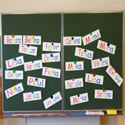

Colegios de Zaragoza
Colegios Privados
de Zaragoza

Colegios Concertados
de Zaragoza
Calendario Escolar
Listado de Colegios
"Colegio Jesús María El Salvador de Zaragoza"
Popular desde hace años
Popular desde hace años
Teléfono: 976 35 34 00
Aspectos generales sobre el Colegio Jesús María El Salvador de Zaragoza
El Colegio Jesús María El Salvador es un centro concertado que ofrece enseñanzas de Infantil, Primaria, Educación Secundaria Obligatoris y Bachillerato. Todos los niveles son ofrecidos mediante el sistema de enseñanza concertada.
Se trata de un centro religioso que define: la tarea educativa asumida como una participación en la misión evangelizadora de la Iglesia; esta misión es la que denominan Pastoral. En este concepto fomentan la involucración de padres y resto de personal del centro.
La entrada de escolares en el centro se produce dsde los 3 años de edad y cuenta con 5 líneas concertadas en 1º y 2º de Infantil, y con 4 en 3º de Infantil (14 aulas). Como innovaciones educativas en este área el colegio destaca:
- Aprendizajes Tempranos.
- Uso del ordenador en el aula.
- Lenguaje constructivo.
- Programa de valores "Sentir y Pensar".
- Atención a la Diversidad
El centro cuenta con muy buenas instalaciones deportivas, sala de conferencias, salón de Actos e Iglesia. También dispone de enfermeria y comedor, en el que separan escolares de infantil de el resto de alumnos del centro. El servicio de autobuses dispone de 8 rutas, y cada autobús dispone de un monitor que controla los desplazamientos.
El Colegio Jesús María El Salvador organiza diversas actividades escolares, programas de voluntariado e incluso escuela de padres y madres.
Según la opinión pública-> "Colegio Jesús María El Salvador de Zaragoza: Una opción perfecta".